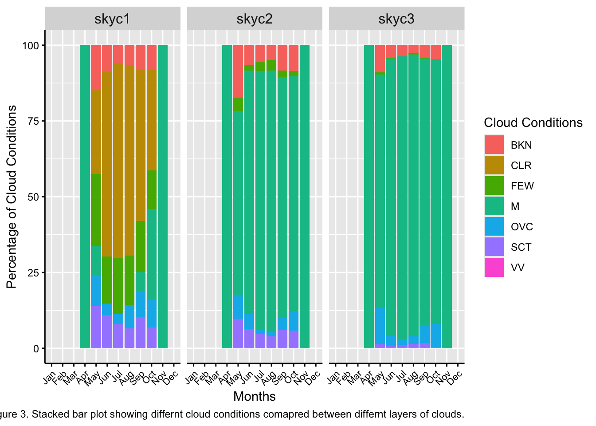

# Add a column that identifys the month
West_Yellow_CC <- West_Yellow_CC %>%
mutate(month = month(valid, label = TRUE))
# Calculate the cloud frequency
cloud_frequency <- West_Yellow_CC %>%
group_by(month, skyc1) %>%
summarize(frequency = n(), .groups = 'drop') %>%
complete(month, skyc1, fill = list(frequency = 0)) %>%
ungroup()
# Assign values to the differnt conditions
West_Yellow_CC <- West_Yellow_CC %>%
mutate(cloud_fraction = case_when(
skyc1 == "CLR" ~ 0,
skyc1 == "FEW" ~ 0.25,
skyc1 == "SCT" ~ 0.50,
skyc1 == "OVC" ~ 0.75,
skyc1 == "BKN" ~ 1,
TRUE ~ NA_real_
))
monthly_cloud_fraction <- West_Yellow_CC %>%
group_by(month) %>%
summarize(mean_fraction = mean(cloud_fraction, na.rm = TRUE), .groups = 'drop') %>%
ungroup()
monthly_cloud_fraction <- monthly_cloud_fraction %>%
mutate(percentage = mean_fraction * 100)
# Calculate the monthly fraction for CC
cloud_means <- West_Yellow_CC %>%
group_by(month) %>%
summarise(avg = mean(cloud_fraction))Cloud Cover and Precipitation
Load in the data
Pine Creek USGS
ASOS data PNA
SNOTEL data location: Parker Peak (683)
- Cloud Cover Probability
# Step 1: Create a water year and month columns
West_Yellow_CC <- West_Yellow_CC %>%
mutate(month = month(valid, label = TRUE), # Extract the month
water_year = ifelse(month(valid) >= 10, year(valid) + 1, year(valid))) # Calculate water year
# Step 2: Group by water year, month, and skyc1, and summarize the frequency
cloud_frequency <- West_Yellow_CC %>%
group_by(month, skyc1) %>%
summarize(frequency = n(), .groups = "drop") %>%
complete(month, skyc1, fill = list(frequency = 0))
# Step 3: View the result
print(cloud_frequency)# A tibble: 84 × 3
month skyc1 frequency
<ord> <chr> <int>
1 Jan BKN 0
2 Jan CLR 0
3 Jan FEW 0
4 Jan M 0
5 Jan OVC 0
6 Jan SCT 0
7 Jan VV 0
8 Feb BKN 0
9 Feb CLR 0
10 Feb FEW 0
# ℹ 74 more rows# Turn the frequency into a percentage
cloud_frequency <- cloud_frequency %>%
group_by(month) %>%
mutate(monthly_total = sum(frequency))
cloud_frequency <- cloud_frequency %>%
group_by(month, skyc1) %>%
mutate(percentage = frequency/monthly_total * 100) %>%
ungroup()
cloud_frequency$month <- factor(cloud_frequency$month, levels = month.abb)
monthly_cloud_fraction$month <- factor(monthly_cloud_fraction$month, levels = month.abb)Stacked bar plot
ggplot()+
geom_col(data = cloud_frequency, aes(x = month, y = percentage, fill = skyc1), position = "stack")+
labs(
x = "Months",
y = "Percentage of Cloud Conditions",
fill = "Cloud Conditions",
caption = "Figure 1. Cloud conditions percentage for each month at the lowest cloud deck."
)Warning: Removed 28 rows containing missing values or values outside the scale range
(`geom_col()`).Methods for Question 1
To determine the cloud cover probability for Yellowstone I first had to find a data set with cloud cover data. The original ASOS station I had didn’t contain cloud cover, but I was able to find West Yellowstone which had data. The first step (1) was to create a column that contained the month name, this was then used to group all the months together. (2) I then split the different categories of cloud cover (brk, clr etc.) into different percentages. (3) After that I was able to determine what the mean cloud cover was throughout the year. (4) The next step was to summarize and count the number of observations and turn that into a percentage of the year by multiplying the number by 100. (5) The final step was to create a stacked bar plot.
Results for Question 1
Clear was the overall majority of cloud cover conditions throughout the water year year. The majority of those months with a high number of clear days was in the summer. In the early winter months and the early spring the percentage of few clouds and overcase storms increase marginally.
Discussion for Question 1
In this data set after analysis I discovered that the main winter months for this water year had no data at all. This was not labeled missing becuase it was empty in the original data set and not labeled with a “m”. Besides that the majority of the observations for this year showed that clear was the main cloud conditions. this makes sense when comparing the climate and region with Colorado that has many blue sky days.
2 Precipitation Probability
# Create data frame with only precip
ASOS_yellow_precip <- ASOS_yellowstone_original %>%
mutate(month = format(valid, "%Y-%m"))
ASOS_yellow_precip <- ASOS_yellow_precip %>%
mutate(precip_event = ifelse(p01i > 0 , 1, 0),
non_trace_event = ifelse(p01i >= 0.01, 1, 0))
Monthly_precip <- ASOS_yellow_precip %>%
group_by(month) %>%
summarise(
total_events = n(),
precip_fraction = sum(precip_event) / total_events,
non_trace_fraction = sum(non_trace_event) / total_events
)2 Graph
ggplot(Monthly_precip, aes(x = month)) +
geom_line(aes(y = precip_fraction, group = 1)) +
geom_line(aes(y = non_trace_fraction, group = 1)) +
labs(
x = "Month",
y = "Precipitation Frequency (Fraction)",
color = "Event Type",
caption = "Figure 2. Monthly precipitation frequency at Yellowstone National Park") +
theme_minimal() +
theme(axis.text.x = element_text(angle = 45, hjust = 1),
axis.line = element_line(color = "black"),
axis.ticks = element_line(color = "black"),
axis.text = element_text(color = "black"))Methods of Question 2
The first step (1) in this analysis was to create a data frame with only precipitation to make the analysis cleaner. (2) The next step was to determine what precipitation events where trace events. This was to remove the trace event so that we can compare them with and without. (3) the next step was to graph the two lines through the year on a line graph.
Results for Question 2
After plotting the two line on the same plot I was able to determine that there were no trace events less than 0.01 inches. The chance of precipitation in Yellowstone national park mainly occurs in the months of February and March.
Discussion for Question 2
The data did not contain any trace events. Looking into the original data set there was nothing labeled with a T. The percentage of precipitation events throughout the year mainly occurred in the late winter. This is something that we would expect with the main precipitation mechanism being Orthographic lift. This is caused by the rocky mountains and this is something we expect through the county at this longitude.
3 Precipitation Mechanism
In Yellowstone National Park, precipitation primarily occurs from Orographic lift. Based on research and considering the topographic properties of the park, we find that as moist air rises and moves over the Rocky Mountains, the water contents within the clouds cool and condense. This leads to precipitation on the west or windward side of the Rocky Mountains.
4 Compare Frequency using only the lowest cloud deck
# Prepare the data with month and water year columns
West_Yellow_CC_all_levels <- West_Yellow_CC %>%
mutate(month = month(valid, label = TRUE),
water_year = ifelse(month(valid) >= 10, year(valid) + 1, year(valid)))
# Assign cloud fractions
cloud_conditions <- c("CLR" = 0, "FEW" = 0.25, "SCT" = 0.5, "OVC" = 0.75, "BKN" = 1)
West_Yellow_CC_all_levels <- West_Yellow_CC_all_levels %>%
mutate(cloud_fraction = coalesce(cloud_conditions[skyc1],
cloud_conditions[skyc2],
cloud_conditions[skyc3],
NA_real_))
# Calculate cloud frequency
cloud_frequency_all_levels <- West_Yellow_CC_all_levels %>%
group_by(month, skyc1, skyc2, skyc3) %>%
summarise(frequency = n(), .groups = 'drop') %>%
complete(month, skyc1, skyc2, skyc3, fill = list(frequency = 0)) %>%
group_by(month) %>%
mutate(monthly_total = sum(frequency)) %>%
mutate(percentage = (frequency / monthly_total) * 100) %>%
ungroup()
# Calculate monthly cloud fraction
monthly_cloud_fraction <- West_Yellow_CC_all_levels %>%
group_by(month, skyc1, skyc2, skyc3) %>%
summarise(mean_fraction = mean(cloud_fraction, na.rm = TRUE), .groups = 'drop') %>%
mutate(percentage = mean_fraction * 100) %>%
ungroup()
# Ensure months are ordered correctly
cloud_frequency_all_levels$month <- factor(cloud_frequency_all_levels$month, levels = month.abb)
monthly_cloud_fraction$month <- factor(monthly_cloud_fraction$month, levels = month.abb)
# Plot
cloud_frequency_long <- cloud_frequency_all_levels %>%
pivot_longer(cols = c(skyc1, skyc2, skyc3),
names_to = "sky_condition",
values_to = "cloud_condition")
ggplot(data = cloud_frequency_long) +
geom_col(aes(x = month, y = percentage, fill = cloud_condition), position = "stack") +
labs(
x = "Months",
y = "Percentage of Cloud Conditions",
fill = "Cloud Conditions",
caption = " Figure 3. Stacked bar plot showing differnt cloud conditions comapred between differnt layers of clouds."
) +
facet_wrap(~ sky_condition)+
theme(
axis.text.x = element_text(angle = 45, hjust = 1, size = 8),
strip.text = element_text(size = 12),
axis.text = element_text(color = "black"),
axis.line = element_line(color = "black"),
axis.ticks = element_line(color = "black")
)Warning: Removed 2100 rows containing missing values or values outside the scale range
(`geom_col()`).
Methods for Question 4.
The first step (1) that I did to complete this problem was copy the code down from question 1. (2) The next step to complete the analysis was the make a new dataset with all levels. This was done to keep everything clean. (3) Then, I was able to create numeric labels for the different cloud conditions for each cloud cover level. (4) I thin groups all the different months together as well as the sky cover level and calculated the frequency of each type of conditions. (5) I then multiplied this value to get the percentage of time in the month. (6) Finally, I plotted the different stacked bar plots and facet wrapped them by different levels so we could compare the observations.
Results for Question 4.
The general percentage of broken (BKN), overcast (OCV), and scattered (SCT) storms stayed the smae throughout the three levels of cloud cover.
Discussion for Question 4.
Within the upper two cloud levels (Skyc2 & Skyc3) there is a lot of missing data. There are also no observations of clear sky in the upper conditions. This makes me think that the ASOS station data figures that if there are no cloud and its clear there is nothing for the upper cloud cover conditions to record.
5 Precipitation form
# Step 1: Convert 'valid' to a date-time object and extract month
West_yellow_2_Q5 <- West_yellow_2 %>%
mutate(valid = as.POSIXct(valid, format = "%Y-%m-%d %H:%M:%S"),
month = month(valid, label = TRUE))
# Convert to numeric and drop na values
West_yellow_2_Q5 <- West_yellow_2_Q5 %>%
mutate(
skyl1 = ifelse(skyl1 == "M", NA, skyl1),
skyl2 = ifelse(skyl2 == "M", NA, skyl2),
skyl3 = ifelse(skyl3 == "M", NA, skyl3)
) %>%
mutate(
skyl1 = as.numeric(skyl1),
skyl2 = as.numeric(skyl2),
skyl3 = as.numeric(skyl3)
)
# Step 2: Assign cloud heights based on sky conditions
West_yellow_2_Q5 <- West_yellow_2_Q5 %>%
mutate(
cloud_height_l1 = case_when(
skyc1 == "CLR" ~ 0,
skyc1 %in% c("FEW", "SCT", "BKN", "OVC") ~ skyl1 * 0.3048,
TRUE ~ NA_real_
),
cloud_height_l2 = case_when(
skyc2 == "CLR" ~ 0,
skyc2 %in% c("FEW", "SCT", "BKN", "OVC") ~ skyl2 * 0.3048,
TRUE ~ NA_real_
),
cloud_height_l3 = case_when(
skyc3 == "CLR" ~ 0,
skyc3 %in% c("FEW", "SCT", "BKN", "OVC") ~ skyl3 * 0.3048,
TRUE ~ NA_real_
)
)
# Step 3: Define average monthly temperatures (°C) - adjust as necessary
avg_monthly_temp <- West_yellow_2_Q5 %>%
mutate(tmpf = na_if(tmpf, "M"),
tmpf = as.numeric(tmpf)) %>%
group_by(month) %>%
summarise(avg_temp = mean(tmpf, na.rm = TRUE), .groups = 'drop')
# Step 4: Combine height and temperature data
precip_distribution <- West_yellow_2_Q5 %>%
left_join(avg_monthly_temp, by = "month") %>%
mutate(
# Calculate temperature at cloud heights using a lapse rate of 6.5 °C per 1000 m
temperature_at_height_l1 = avg_temp - (5 * (cloud_height_l1 / 1000)),
temperature_at_height_l2 = avg_temp - (5 * (cloud_height_l2 / 1000)),
temperature_at_height_l3 = avg_temp - (5 * (cloud_height_l3 / 1000)),
# Determine precipitation types
precipitation_type_l1 = case_when(
temperature_at_height_l1 <= 32 ~ "Solid (Snow)",
temperature_at_height_l1 > 32 ~ "Liquid (Rain)",
TRUE ~ "No Precipitation"
),
precipitation_type_l2 = case_when(
temperature_at_height_l2 <= 32 ~ "Solid (Snow)",
temperature_at_height_l2 > 32 ~ "Liquid (Rain)",
TRUE ~ "No Precipitation"
),
precipitation_type_l3 = case_when(
temperature_at_height_l3 <= 32 ~ "Solid (Snow)",
temperature_at_height_l3 > 32 ~ "Liquid (Rain)",
TRUE ~ "No Precipitation"
)
)
# Step 5: Summarize the monthly distribution of precipitation types
monthly_distribution <- precip_distribution %>%
group_by(month) %>%
summarise(
solid_count_l1 = sum(precipitation_type_l1 == "Solid (Snow)", na.rm = TRUE),
liquid_count_l1 = sum(precipitation_type_l1 == "Liquid (Rain)", na.rm = TRUE),
solid_count_l2 = sum(precipitation_type_l2 == "Solid (Snow)", na.rm = TRUE),
liquid_count_l2 = sum(precipitation_type_l2 == "Liquid (Rain)", na.rm = TRUE),
solid_count_l3 = sum(precipitation_type_l3 == "Solid (Snow)", na.rm = TRUE),
liquid_count_l3 = sum(precipitation_type_l3 == "Liquid (Rain)", na.rm = TRUE),
.groups = 'drop'
)
# View the monthly distribution
print(monthly_distribution)# A tibble: 8 × 7
month solid_count_l1 liquid_count_l1 solid_count_l2 liquid_count_l2
<ord> <int> <int> <int> <int>
1 Apr 0 0 0 0
2 May 167 506 117 176
3 Jun 0 719 0 141
4 Jul 0 743 0 108
5 Aug 0 716 0 101
6 Sep 50 624 15 133
7 Oct 186 337 143 25
8 Nov 0 0 0 0
# ℹ 2 more variables: solid_count_l3 <int>, liquid_count_l3 <int># Plot the table
Monthly_distribution_long <- monthly_distribution %>%
pivot_longer(cols = -month, names_to = c("type", "layer"), names_sep = "_", values_to = "count")Warning: Expected 2 pieces. Additional pieces discarded in 6 rows [1, 2, 3, 4,
5, 6].# Step 2: Create the plot
ggplot(Monthly_distribution_long, aes(x = month, y = count, fill = type)) +
geom_col(position = "stack") +
facet_wrap(~ layer, ncol = 1) + # Create separate plots for each layer
labs(
x = "Month",
y = "Count",
fill = "Precipitation Type",
caption = " Figure 4. Total number of precipitation events in the year broken up into solid precip versus liquid precip."
) +
scale_fill_manual(values = c("solid" = "blue", "liquid" = "lightblue"))+
theme(
axis.line = element_line(color = "black"),
axis.text = element_text(color ="black"),
axis.ticks = element_line(color ="black")
)Methods for Question 5.
To begin analysis (1) on this problem I first began with creating a new data frame for this problem. I then began with creating a column to specify the month. The next step (2) was to drop the na value in the sky cover columns. (3) Then I converted the elevation column to kilometers so that I could put it into the lapse rate equation. (4) I then found the average monthly temperature to put into the lapse rate equation. (5) I then created a model to determine if it was above freezing it would be liquid and below would be solid. (6) I was then able to count all of the observations and determine the number of events each year that are solid precipitation versus liquid.